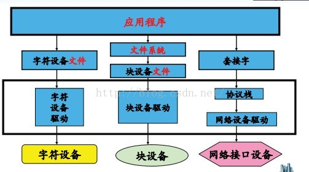
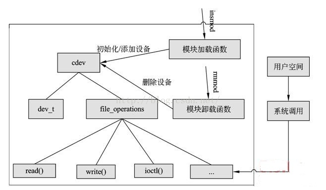
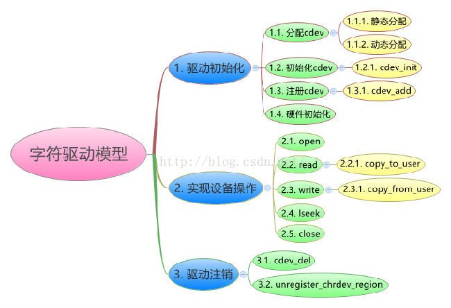
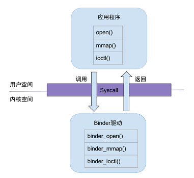
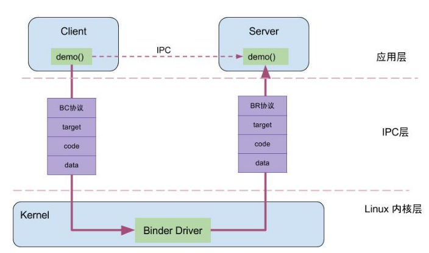
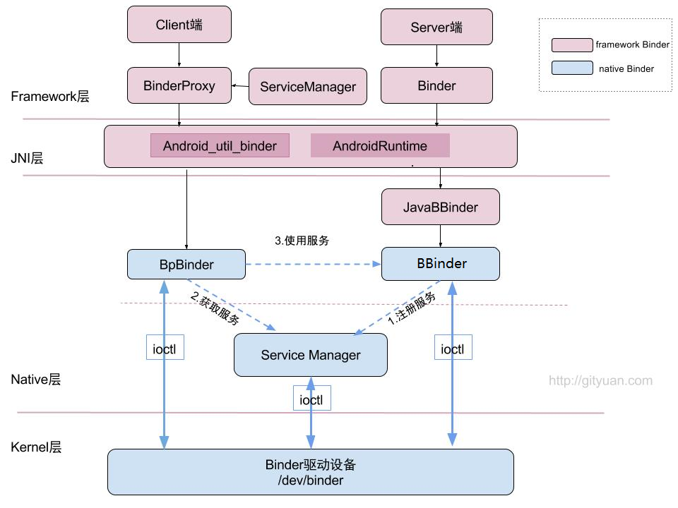
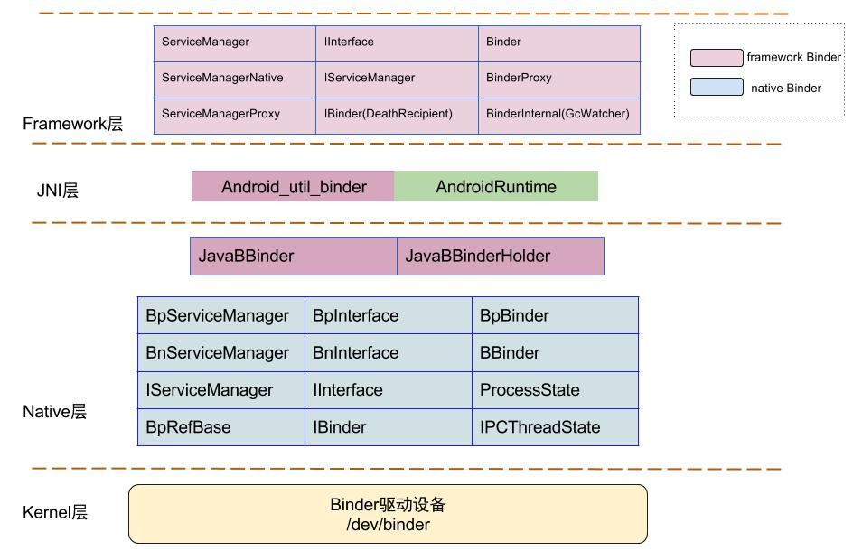
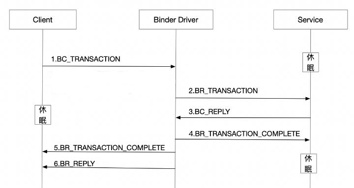
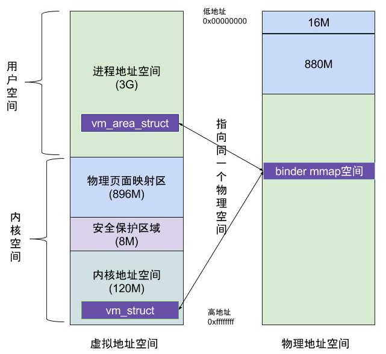
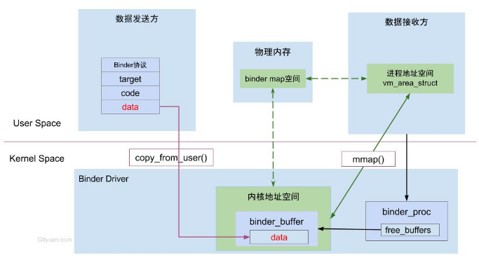

深入 Binder 之架构篇
学习 binder 我感觉得从上到下：先对 binder 架构/理论有个大概的认识、对 binder 里的数据结构有个印象，再深入代码细节；整个 binder 涉及到应用侧和驱动侧、app 侧和 framework 侧、java 层和 native 层，代码量巨大而且跨度很大，只有对整个 binder 架构有清晰的认识才不会迷失在细节里
Linux 设备

linux 系统将设备分为3类：字符设备、块设备和网络设备：
字符设备是指只能一个字节一个字节读写的设备，不能随机读取设备内存中的某一数据，读取数据需要按照先后顺序。字符设备是面向流的设备，常见的字符设备有鼠标、键盘、串口、控制台和 LED 设备等块设备是指可以从设备的任意位置读取一定长度数据的设备。块设备包括硬盘、磁盘、U 盘和 SD 卡等
每个字符设备或块设备都在 /dev 目录下对应一个设备文件，linux 用户程序通过设备文件（或称设备节点）来使用驱动程序操作字符设备和块设备；驱动调用的实质，就是通过设备文件找到与之对应设备号的设备，再通过设备初始化时绑定的操作函数对硬件进行控制
字符设备
字符设备、字符设备驱动与用户空间访问该设备的程序三者之间的关系如下图：
- 使用 cdev 结构体来描述字符设备
- 通过其成员 dev_t 来定义设备号（分为主、次设备号）以确定字符设备的唯一性
- 通过其成员 file_operations 来定义字符设备驱动提供给 VFS 的接口函数，如常见的 open()、read()、write() 等

在 Linux 字符设备驱动中：
- 模块加载函数通过 register_chrdev_region 或 alloc_chrdev_region 来静态或者动态获取设备号
- 通过 cdev_init 建立 cdev 与 file_operations 之间的连接，通过 cdev_add 向系统添加一个 cdev 以完成注册
- 模块卸载函数通过 cdev_del 来注销 cdev，通过 unregister_chrdev_region 来释放设备号

杂项设备
杂项设备也是在嵌入式系统中用得比较多的一种设备驱动，使用 misc_register(struct miscdevice *misc) 注册杂项设备，misc_deregister(struct miscdevice *misc) 释放杂项设备
在 Linux 内核的 include/linux 目录下有 Miscdevice.h 文件，要把自己定义的 misc device 设备定义在这里。其实是因为这些字符设备不符合预先确定的字符设备范畴，所有这些设备采用主编号 10 ，一起归于 misc device，其实 misc_register 就是用主标号 10 调用 register_chrdev() 的，也就是说 misc device 就是特殊的字符设备，可自动生成设备节点
misc device 是特殊字符设备，注册驱动程序时采用 misc_register 函数注册，此函数中会自动创建设备节点（即设备文件），无需 mknod 指令手动创建设备文件
杂项字符设备和一般字符设备的区别：
- 一般字符设备首先申请设备号，但是杂项字符设备的主设备号为 10 次设备号通过结构体 miscdevice 中的 minor 来设置
- 一般字符设备要创建设备文件，但是杂项字符设备在注册时会自动创建
- 一般字符设备要分配一个 cdev（字符设备），但是杂项字符设备只要创建 miscdevice 结构体即可
- 一般字符设备需要初始化 cdev，即给字符设备设置对应的操作函数集 file_operation，但是杂项字符设备在结构体 miscdevice 中定义
- 一般字符设备使用注册函数 cdev_add 而杂项字符设备使用 misc_register 来注册
struct miscdevice{
int minor; // 杂项设备的此设备号(如果设置为 MISC_DYNAMIC_MINOR，表示系统自动分配未使用的 minor)
const char *name;
const stuct file_operations *fops; // 驱动主题函数入口指针
struct list_head list;
struct device *parent;
struct device *this device;
const char *nodename; // 在 /dev 目录下面创建的设备驱动节点
mode_t mode;
};常见的设备列表
| 主设备号 | 次设备号 | 文件名 | 设备类型 | 说明 |
|---|---|---|---|---|
| 1 | 3 | /dev/null | char | 空设备。任何写入都将被直接丢弃(但返回”成功”)；任何读取都将得到 EOF (文件结束标志) |
| 4 | 0 | /dev/tty0 | char | 当前虚拟控制台 |
| 1 | /dev/tty1 | char | 第 1 个虚拟控制台 | |
| 8 | 0 | /dev/sda | block | 第 1 个磁盘 |
| 16 | /dev/sdb | block | 第 2 个磁盘 | |
| 32 | /dev/sdc | block | 第 3 个磁盘 | |
| 10 | 1 | /dev/psaux | char | PS/2 鼠标 |
| 156 | /dev/lcd | char | 液晶(LCD)显示屏 |
Binder 也是设备
Binder 以杂项设备（misc device，是特殊的字符设备）进行注册，作为虚拟字符设备没有直接操作硬件，只是对设备内存的处理，Binder 驱动的主要方法有：
static int __init binder_init(void) // 驱动的初始化
device_initcall(binder_init);
const struct file_operations binder_fops = {
.owner = THIS_MODULE,
.poll = binder_poll,
.unlocked_ioctl = binder_ioctl, // syscall ioctl 的回调，客户端主要通过此方法与 binder 驱动交互
.compat_ioctl = compat_ptr_ioctl,
.mmap = binder_mmap, // syscall mmap 的回调，与 binder 交互前需要分配一块物理内存地址存放 IPC 数据（参数和返回值）
.open = binder_open, // syscall open 的回调，与 binder 交互前需要 open("/dev/binder") 拿到 binder fd
.flush = binder_flush,
.release = binder_release,
};Binder Driver 是 Android 专用的，但底层的驱动架构与 Linux 设备驱动一样，用户态的程序调用 Kernel 层驱动是需要陷入内核态进行系统调用（syscall）
比如打开 Binder Driver 方法的调用链是 open() -> __open() -> binder_open()
- open() 为用户空间的方法
- _open() 是系统调用中相应的处理方法
- 通过查找，对应调用到内核 Binder Driver 的 binder_open 方法

Binder 在 IPC 中的位置
Client 进程通过 RPC(Remote Procedure Call Protocol) 与 Server 通信的过程，可以简单的分为三层：驱动层、IPC 层和业务层
- demo() 是 client 和 server 共同协商好的统一方法
- RPC 数据、code、handle 和协议这四项组成了 IPC 的层的数据，通过 IPC 层进行数据传输
- 而真正在 Client 和 Server 两端建立通信的基础设施是 Binder Driver

架构总览
从 IPC 角度看，Binder 是 Android 中一种跨进程通信方式，这种通信方式是 Android 独有的
从 Android APP 层面看，Binder 是客户端和服务端进行 IPC 通信的媒介，例如当 bindService 的时候，服务端就会返回一个包含服务端业务调用的 Binder 对象，通过这个 Binder 对象客户端可以获取服务端提供的服务或者数据，归属于属于 RPC
从 Android Framework 层面看，Binder 是各种 Manager(ActivityManager、WindowManager 等) 和相应 XXXManagerService 的桥梁
从 Android Native 层面看，Binder 是创建 ServiceManager 以及 BpBinder/BBinder 模型，搭建与 binder 驱动的桥梁
从 Android Driver 层面看，Binder 是一个虚拟的字符设备，它的设备驱动路径是
/dev/binder

Binder 在整个 Android 系统中具有重要的作用，在 native 层有一套完整的 binder 通信的 C/S 架构：BpBinder 作为客户端，BBinder 作为服务端
java 层也有一套镜像功能的 binder C/S 架构，通过 JNI 和 native binder 相对应，并且最终都是交给 native binder 来完成的

通讯模型
ioctl
ioctl - control device
int ioctl(int fd, unsigned long request, ...);The ioctl() system call manipulates the underlying device
parameters of special files. In particular, many operating
characteristics of character special files (e.g., terminals) may
be controlled with ioctl() requests. The argumentfdmust be an
open file descriptor.The second argument is a
device-dependent request code. The
third argument isan untyped pointer to memory.Ioctl command values are 32-bit constants. In principle these
constants are completely arbitrary, but people have tried to
build some structure into them.Later (0.98p5) some more information was built into the number.
One has 2 direction bits (00: none, 01: write, 10: read, 11:
read/write) followed by 14 size bits (giving the size of the
argument), followed by an 8-bit type (collecting the ioctls in
groups for a common purpose or a common driver), and an 8-bit
serial number.The macros describing this structure live in <asm/ioctl.h> and
are _IO(type,nr) and {_IOR,_IOW,_IOWR}(type,nr,size). They use
sizeof(size) so that size is a misnomer here: this third argument
is a data type.
Linux 下用户空间通过系统调用 ioctl 与设备驱动进行交互，也就说当想用 binder 实现 IPC 通讯时得通过 ioctl 进行，例如 ioctl(binder_fd, BINDER_WRITE_READ, p_bwr)
BINDER_WRITE_READ告诉 binder 收发 IPC 数据p_bwr是一个指向struct binder_write_read的指针，结构体包含需要发送的数据的地址和长度，以及需要将数据接收放在哪里
完整的 binder ioctl 命令如下：
| ioctl命令 | 数据类型 | 操作 |
|---|---|---|
| BINDER_WRITE_READ | struct binder_write_read | 收发 Binder IPC 数据（最主要、最常用的命令） |
| BINDER_SET_MAX_THREADS | __u32 | 设置 Binder 线程最大个数 |
| BINDER_SET_CONTEXT_MGR | __s32 | 设置 service manager 节点（也即是经常用到的 services 注册表） |
| BINDER_THREAD_EXIT | __s32 | 释放 Binder 线程 |
| BINDER_VERSION | struct binder_version | 获取 Binder 版本信息 |
| BINDER_GET_NODE_DEBUG_INFO | struct binder_node_debug_info | 获取 binder debug 信息 |
// https://android.googlesource.com/kernel/common/+/refs/heads/android-mainline/drivers/android/binder.c
static long binder_ioctl(struct file *filp, unsigned int cmd, unsigned long arg)
{
// ...
switch (cmd) {
case BINDER_WRITE_READ:
binder_ioctl_write_read(filp, cmd, arg, thread);
// ...
case BINDER_SET_CONTEXT_MGR:
binder_ioctl_set_ctx_mgr(filp, NULL);
// ...
case BINDER_THREAD_EXIT:
case BINDER_SET_CONTEXT_MGR_EXT:
case BINDER_SET_MAX_THREADS:
case BINDER_VERSION:
case BINDER_GET_NODE_INFO_FOR_REF:
case BINDER_GET_NODE_DEBUG_INFO:
case BINDER_FREEZE:
case BINDER_GET_FROZEN_INFO:
case BINDER_ENABLE_ONEWAY_SPAM_DETECTION:
// ...
}BINDER_WRITE_READ
ioctl 命令 BINDER_WRITE_READ 对应的处理器方法是 binder_ioctl_write_read，对应的数据结构/内存布局是 struct binder_write_read（ioctl 第三个参数指针指向的内存）
处理器的整个逻辑也很简单：
- 如果
write_buffer有数据就用binder_thread_write处理，write_buffer 是紧凑的布局[BC_][struct][BC_][struct][BC_][struct]... - 如果
read_buffer有数据就用binder_thread_read处理
// https://android.googlesource.com/platform/external/kernel-headers/+/refs/tags/android-mainline-12.0.0_r114/original/uapi/linux/android/binder.h
struct binder_write_read {
binder_size_t write_size; /* bytes to write */
binder_size_t write_consumed; /* bytes consumed by driver */
binder_uintptr_t write_buffer; /* client/server 发送给 driver 的数据 */
binder_size_t read_size; /* bytes to read */
binder_size_t read_consumed; /* bytes consumed by driver */
binder_uintptr_t read_buffer; /* client/server 接收来自 driver 的数据 */
};
// https://android.googlesource.com/kernel/common/+/refs/heads/android-mainline/drivers/android/binder.c
static int binder_ioctl_write_read(struct file *filp,
unsigned int cmd, unsigned long arg,
struct binder_thread *thread)
{
// ...
struct binder_write_read bwr;
if (bwr.write_size > 0) {
ret = binder_thread_write(proc, thread,
bwr.write_buffer,
bwr.write_size,
&bwr.write_consumed);
trace_binder_write_done(ret);
if (ret < 0) {
bwr.read_consumed = 0;
if (copy_to_user(ubuf, &bwr, sizeof(bwr)))
ret = -EFAULT;
goto out;
}
}
if (bwr.read_size > 0) {
ret = binder_thread_read(proc, thread, bwr.read_buffer,
bwr.read_size,
&bwr.read_consumed,
filp->f_flags & O_NONBLOCK);
trace_binder_read_done(ret);
binder_inner_proc_lock(proc);
if (!binder_worklist_empty_ilocked(&proc->todo))
binder_wakeup_proc_ilocked(proc);
binder_inner_proc_unlock(proc);
if (ret < 0) {
if (copy_to_user(ubuf, &bwr, sizeof(bwr)))
ret = -EFAULT;
goto out;
}
}
// ...
}
// https://android.googlesource.com/kernel/common/+/refs/heads/android12-5.10-lts/drivers/android/binder.c
static int binder_thread_write(struct binder_proc *proc, struct binder_thread *thread,
binder_uintptr_t binder_buffer, // 对应 binder_write_read.write_buffer
size_t size, // 对应 binder_write_read.write_size
binder_size_t *consumed // 对应 binder_write_read.write_consumed
) {
uint32_t cmd;
struct binder_context *context = proc->context;
void __user *buffer = (void __user *)(uintptr_t)binder_buffer;
void __user *ptr = buffer + *consumed;
void __user *end = buffer + size;
while (ptr < end && thread->return_error.cmd == BR_OK) {
int ret;
if (get_user(cmd, (uint32_t __user *)ptr)) // 32 bits 的 BC 命令
return -EFAULT;
ptr += sizeof(uint32_t);
switch (cmd) {
case BC_TRANSACTION:
case BC_REPLY: {
struct binder_transaction_data tr;
if (copy_from_user(&tr, ptr, sizeof(tr))) // 命令后紧跟着对应的结构体
return -EFAULT;
ptr += sizeof(tr);
binder_transaction(proc, thread, &tr,
cmd == BC_REPLY, 0);
break;
}
case BC_INCREFS:
case BC_ACQUIRE:
case BC_RELEASE:
case BC_DECREFS:
case BC_INCREFS_DONE:
case BC_ACQUIRE_DONE:
// ...
}
*consumed = ptr - buffer;
}
return 0;
}Binder IPC 通信至少是两个进程的交互，一次完整的 Binder 通信过程如下
- BINDER_COMMAND_PROTOCOL：binder 请求码，以 BC_ 开头，简称
BC码，表示将数据从 client/server 传递到 Binder Driver - BINDER_RETURN_PROTOCOL：binder 响应码，以 BR_ 开头，简称
BR码，表示将数据从 Binder Driver 传递到 client/server - client 进程执行 binder_thread_write，根据 BC 命令生成相应的 binder_work
- server 进程执行 binder_thread_read，根据 binder_work_type 类型生成 BR，发送到用户空间处理

请求码是在 binder_driver_command_protocol 中定义的，用于应用程序向 binder 驱动设备发送请求消息，应用程序包含 Client 和 Server 端，以 BC_ 开头，总共 19 条
| 请求码 | 参数类型 | 作用 |
|---|---|---|
| BC_TRANSACTION | binder_transaction_data | Client 向 Binder 驱动发送的请求数据 |
| BC_REPLY | binder_transaction_data | Server 向 Binder 驱动发送的回复数据 |
| BC_ACQUIRE_RESULT | __s32 | 暂时不支持 |
| BC_FREE_BUFFER | binder_uintptr_t | 释放内存 |
| BC_INCREFS | __u32 | binder_ref 弱引用加1操作（这些请求码的作用是对 binder 的强/弱引用的计数操作，用于实现强/弱指针的功能） |
| BC_ACQUIRE | __u32 | binder_ref 弱引用减1操作 |
| BC_RELEASE | __u32 | binder_ref 强引用加1操作 |
| BC_DECREFS | __u32 | binder_ref 强引用减1操作 |
| BC_INCREFS_DONE | binder_ptr_cookie | binder_node 强引用减1操作 |
| BC_ACQUIRE_DONE | binder_ptr_cookie | binder_node 弱引用减1操作 |
| BC_ATTEMPT_ACQUIRE | binder_pri_desc | 暂时不支持 |
| BC_REGISTER_LOOPER | 无参数 | 创建新的 Looper 线程 |
| BC_ENTER_LOOPER | 无参数 | 应用线程进入 Looper |
| BC_EXIT_LOOPER | 无参数 | 应用线程退出 Looper |
| BC_REQUEST_DEATH_NOTIFICATION | binder_handle_cookie | 注册死亡通知 |
| BC_CLEAR_DEATH_NOTIFICATION | binder_handle_cookie | 取消注册的死亡通知 |
| BC_DEAD_BINDER_DONE | binder_uintptr_t | 已经完成的死亡通知 |
| BC_TRANSACTION_SG | binder_transaction_data_sg | Client 向 Binder 驱动发送的 Command |
| BC_REPLY_SG | binder_transaction_data_sg | Server 向 Binder 驱动发送的 Command |
响应码在 binder_driver_return_protocol 中定义，是 binder 设备向应用程序回复的消息，应用程序包括 client 和 server 端，以 BR_ 开头，总共 18 条
| 响应码 | 参数类型 | 作用 |
|---|---|---|
| BR_ERROR | __s32 | 操作发送错误 |
| BR_OK | 无参数 | 操作完成 |
| BR_TRANSACTION | binder_transaction_data | Binder 驱动向 Server 发送的请求数据 |
| BR_REPLY | binder_transaction_data | Binder 驱动向 Client 发送的回复数据 |
| BR_ACQUIRE_RESULT | __s32 | 暂时不支持 |
| BR_DEAD_REPLY | 无参数 | 回复失败，线程或节点为空 |
| BR_TRANSACTION_COMPLETE | 无参数 | 对请求发送的成功反馈 |
| BR_INCREFS | binder_ptr_cookie | binder_ref 弱引用加1操作 |
| BR_ACQUIRE | binder_ptr_cookie | binder_ref 弱引用减1操作 |
| BR_RELEASE | binder_ptr_cookie | binder_ref 强引用加1操作 |
| BR_DECREFS | binder_ptr_cookie | binder_ref 强引用减1操作 |
| BR_ATTEMPT_ACQUIRE | binder_pri_ptr_cookie | 暂时不支持 |
| BR_NOOP | 无参数 | 不做任何事情 |
| BR_SPAWN_LOOPER | 无参数 | 创建新的 Looper 线程 |
| BR_FINISHED | 无参数 | 暂时不支持 |
| BR_DEAD_BINDER | binder_uintptr_t | Binder 驱动向 client 发送死亡通知 |
| BR_CLEAR_DEATH_NOTIFICATION_DONE | binder_uintptr_t | 清除死亡通知 |
| BR_FAILED_REPLY | 无参数 | 回复失败，transaction 出错导致 |
binder_transaction
Binder 作为一种高效的 IPC 方式，在进程间进行数据传递自然是最核心的任务，所以 _TRANSACTION_ 相关的命令是最常使用、最重要的命令，对应方法 binder_transaction，对应结构体 binder_transaction_data
// https://android.googlesource.com/platform/external/kernel-headers/+/refs/tags/android-mainline-12.0.0_r114/original/uapi/linux/android/binder.h
struct binder_transaction_data {
/* The first two are only used for bcTRANSACTION and brTRANSACTION,
* identifying the target and contents of the transaction.
*/
union {
__u32 handle; /* target descriptor of command transaction */
binder_uintptr_t ptr; /* target descriptor of return transaction */
} target;
binder_uintptr_t cookie; /* target object cookie */
__u32 code; /* transaction command */
/* General information about the transaction. */
__u32 flags;
pid_t sender_pid;
uid_t sender_euid;
binder_size_t data_size; /* number of bytes of data */
binder_size_t offsets_size; /* number of bytes of offsets */
/* If this transaction is inline, the data immediately
* follows here; otherwise, it ends with a pointer to
* the data buffer.
*/
union {
struct {
/* transaction data */
binder_uintptr_t buffer;
/* offsets from buffer to flat_binder_object structs */
binder_uintptr_t offsets;
} ptr;
__u8 buf[8];
} data;
};
static void binder_transaction(struct binder_proc *proc,
struct binder_thread *thread,
struct binder_transaction_data *tr, int reply,
binder_size_t extra_buffers_size)
{
// ...
for (buffer_offset = off_start_offset; buffer_offset < off_end_offset;
buffer_offset += sizeof(binder_size_t)) {
struct binder_object_header *hdr;
size_t object_size;
struct binder_object object;
binder_size_t object_offset;
binder_size_t copy_size;
object_size = binder_get_object(target_proc, user_buffer,
t->buffer, object_offset, &object);
hdr = &object.hdr;
switch (hdr->type) { // 传输各种类型的数据
case BINDER_TYPE_PTR:
case BINDER_TYPE_BINDER:
case BINDER_TYPE_WEAK_BINDER:
case BINDER_TYPE_HANDLE:
case BINDER_TYPE_WEAK_HANDLE:
case BINDER_TYPE_FD:
case BINDER_TYPE_FDA:
// ...
}
}
}内存模型
binder_mmap 是 Binder 进程间通信的高效的核心机制所在，其模型如下：

一般的 IPC 需要 client 进程空间拷贝到内核空间，再由内核空间拷贝到 server 进程空间，共发生两次内存拷贝；而 Binder IPC 整个过程只发生一次内存拷贝：
- 虚拟进程地址空间（vm_area_struct）和虚拟内核地址空间（vm_struct）都映射到同一块物理内存空间
- 当 client 与 server 发送数据时，client 作为数据发送端，先从自己的进程空间把 IPC 通信数据 copy_from_user 拷贝到内核空间
- 而 server 作为数据接收端与内核共享数据，不再需要拷贝数据，而是通过内存地址空间的偏移量获取内存地址

对于进程和内核虚拟地址映射到同一个物理内存的操作（通过地址偏移量来实现）是发生在数据接收端，而数据发送端还是需要将用户态的数据复制到内核态。为什么不直接让发送端和接收端直接映射到同一块物理空间，那样连一次复制的操作都不需要，0 次复制那就和 Linux 标准内核的共享内存 IPC 没有区别了，对于共享内存虽然效率高，但是对于多进程同步的问题比较复杂，而管道/消息队列等 IPC 需要复制两次，效率较低。总之Android 选择 Binder 是基于速度和安全性的考虑。